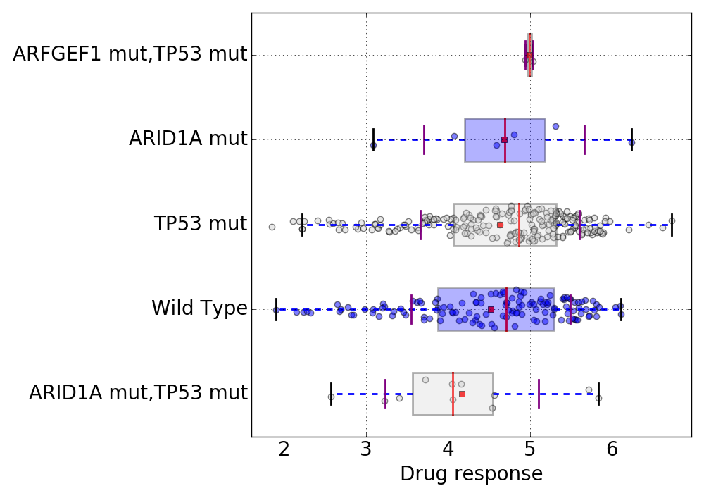
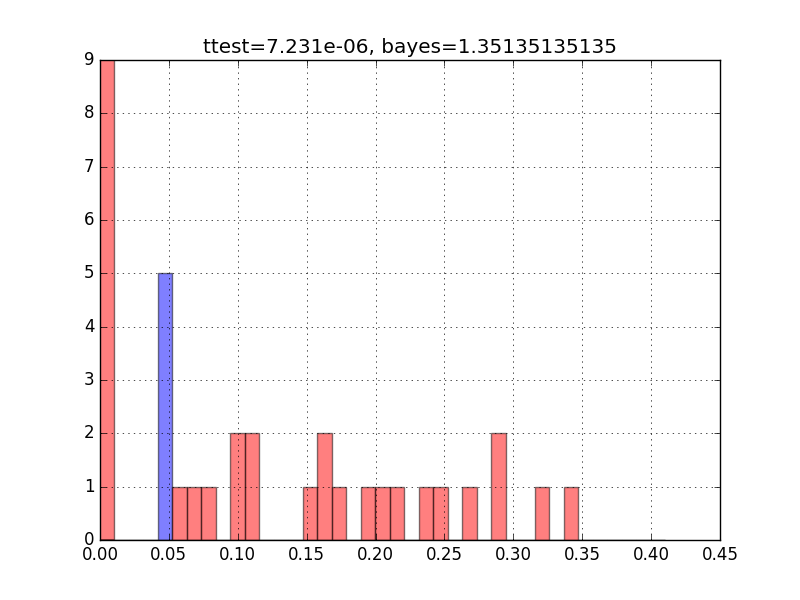
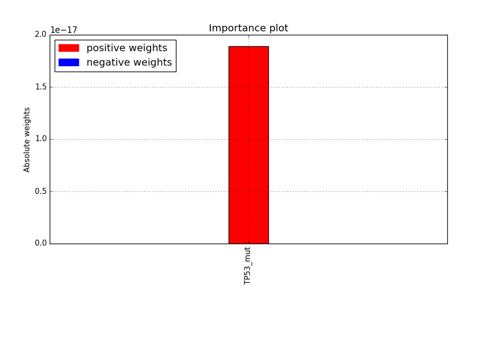
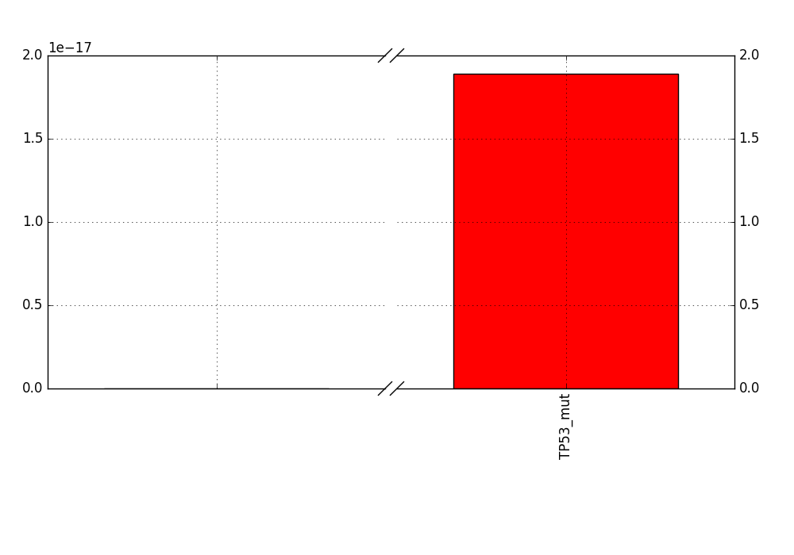

ANOVA analysis summary
Report and analysis created with GDSCTools, (version 0.16.3)
Analysis Domain: PANCAN tissues/cancer cell type
DrugID: 17
Regression method: lasso
Regression, alpha parameter used: 0.023
Bayes factor: 1.351
Regression coeffcient: -3.7343713818585883e-16
boxplot results
to do
randomness results
Here we run the regression analysis N times and plot the regression value (x-axis) for the real data (blue) and randomising the variable to explain (red). The bayes and ttest metric are then computed.
importance results
Feature with non-null weights. If empty, it means no feature of interests were found
weights results
Feature with non-null weights. If empty, it means no feature of interests were found
Created on 2016-12-05 13:58:37 by cokelaer
Please visit online
documentation for details.